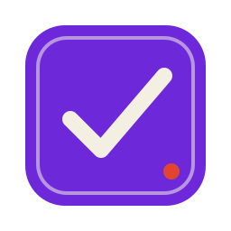
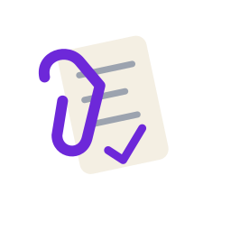
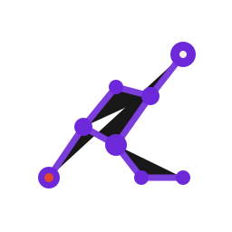

01 · PROOF MARK
seal
The check
A violet seal with one check and one vermilion dot. No character, no face. A decision mark.

44
24
Best for: gate 2, favicon, proof. Risk: no warmth.
You asked for totally different. This is the honest version: no magpie, no eyes, no scarf, no proof page. Five different categories of identity. If none of these is right, then “Mira the bird” is the constraint — not the year.
A violet seal with one check and one vermilion dot. No character, no face. A decision mark.

The letter M ends in a check. A brand mark, not a mascot. One shape, no story character.
A terminal block cursor and a check. The factory as a prompt, not a character.
A violet paper clip holding the proof card. A physical object with no face.

Nodes and edges form a check. The identity is a system that changes with state.
